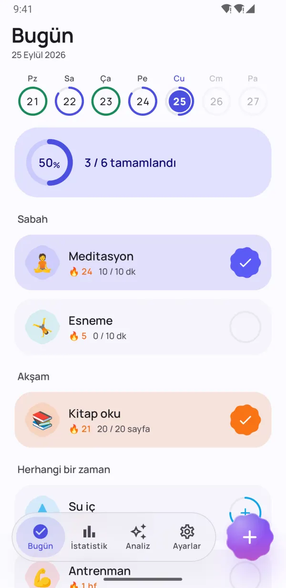
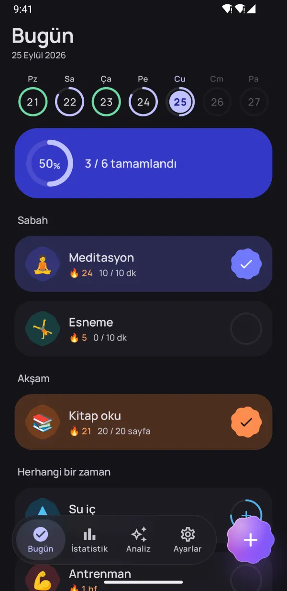
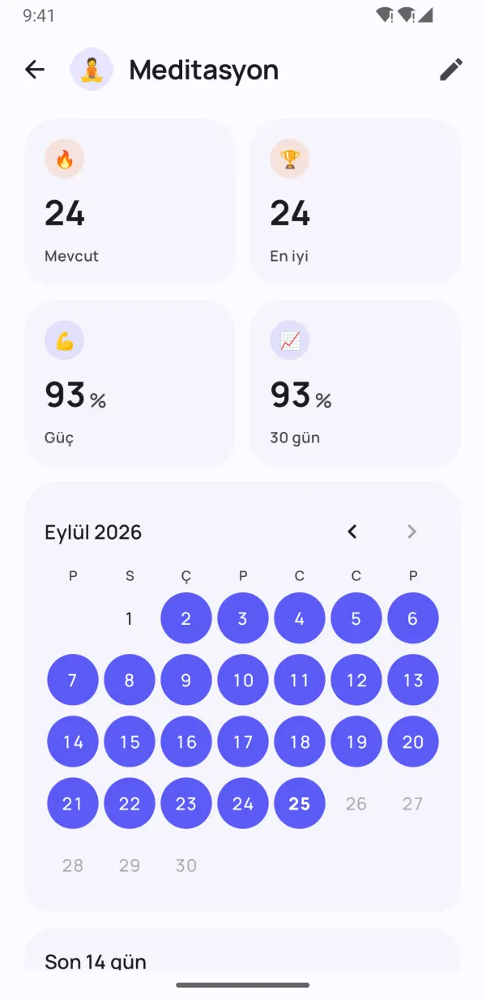
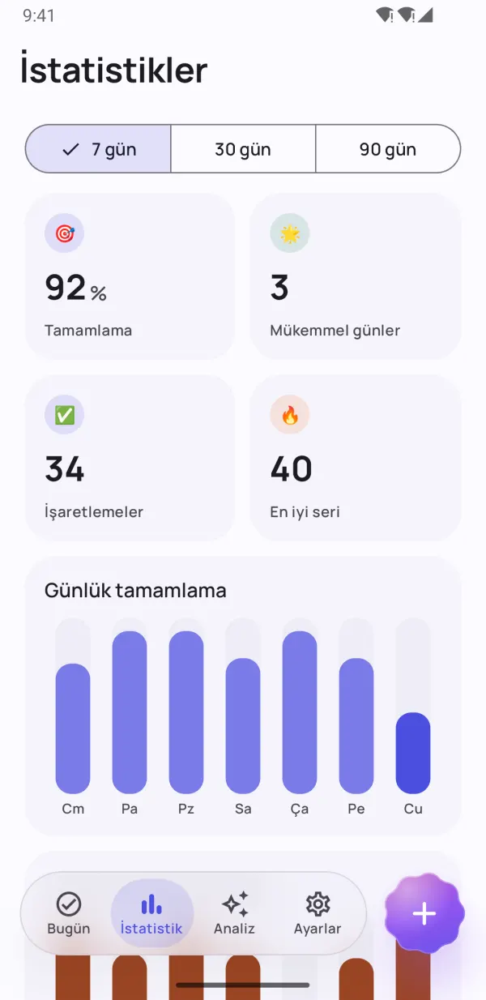
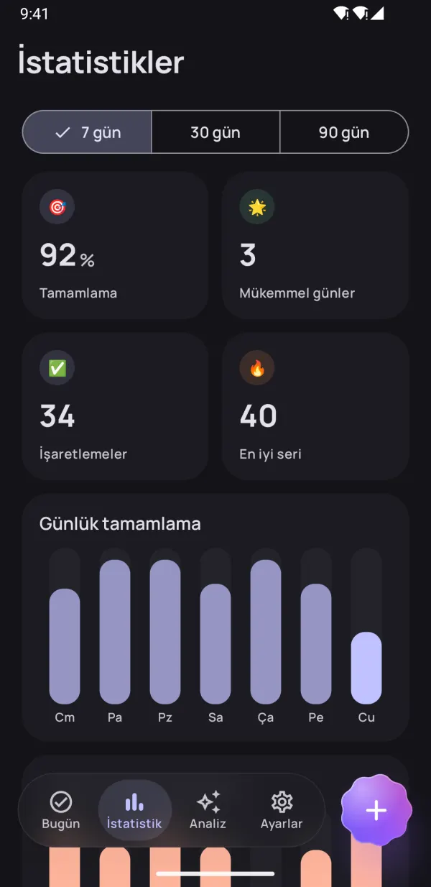
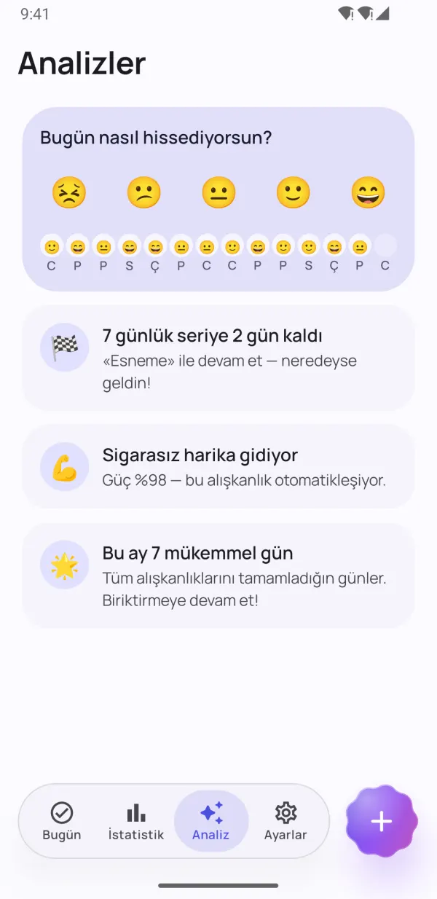
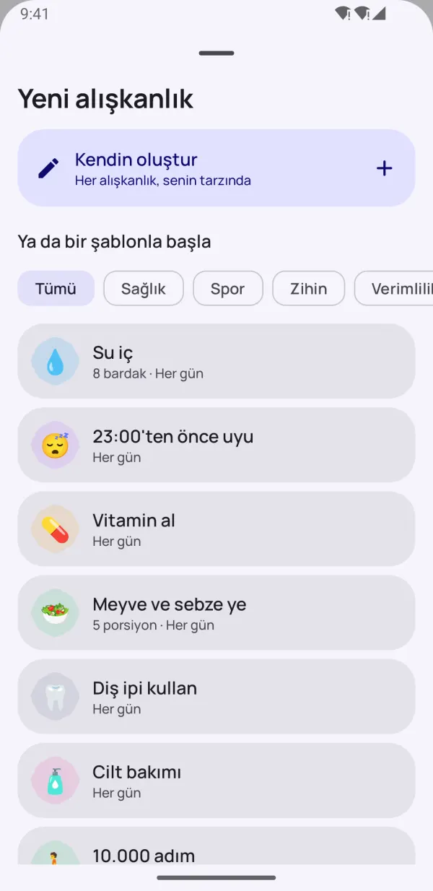
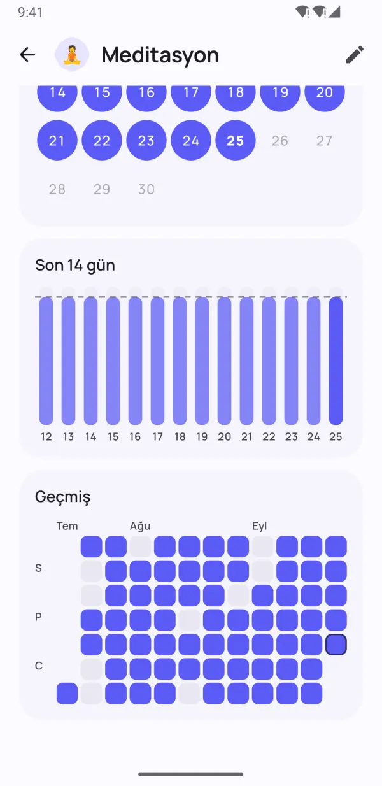

Küçük alışkanlıklar.
Büyük değişim.
Dotday, iyi alışkanlıklar edinmene ve kötülerini bırakmana baskı olmadan yardım eder. Tek dokunuşla işaretle, yoğun günlerde bile serini koru ve sana gerçekten neyin iyi geldiğini gör.
- Ücretsiz
- Kayıt yok
- Veriler telefonunda kalır
- 13 dil


Alışkanlıkların kalıcı olsun diye
İstikrarlı kalman için gereken her şey — ve yoluna çıkan hiçbir şey.
Tüm günün tek dokunuş uzağında
Sabah, öğleden sonra ve akşam grupları rutinini basit bir kontrol listesine dönüştürür. Bir kez dokun, tamam.
- Evet/hayır, sayı, süre ve bırakma alışkanlıkları
- Hafta şeridinde her gün bir bakışta
- Hatırlatıcıdan doğrudan "Tamamlandı" ve "10 dk sonra"

Kötü bir günü affeden seriler
Dinlenme günleri, esnek planlar ve seri dondurma seni yolda tutar. Alışkanlık gücü, sadece serinin uzunluğunu değil, alışkanlığın ne kadar oturduğunu gösterir.
- Seriyi bozmadan bir günü atla
- Yoğun ya da hasta günler için seri dondurma
- 0'dan %100'e alışkanlık gücü puanı


Gerçek ilerlemeni gör
Isı haritaları, takvimler ve tamamlanma eğilimleri 7, 30 ve 90 günde nasıl gittiğini net olarak gösterir.
- Her alışkanlık için ısı haritası
- En uzun seri ve tamamlanma oranı
- Açık ve karanlık modda şık

Seni motive eden analizler
Ruh halini bir saniyede kaydet, Dotday neyin gerçekten işe yaradığını bulsun: en iyi ve en zorlu günlerin, ruh halini yükselten alışkanlıklar.
- Tek dokunuşla ruh hali kaydı
- Bir sonraki hedefinden önce küçük hatırlatmalar
- Seni daha mutlu eden alışkanlıkları keşfet
Küçük detaylar, büyük fark
Takibi zahmetsiz kılan özenli özellikler.
Ana ekran widget'ları
Bugünün alışkanlıklarını işaretle, serini ya da ısı haritanı izle — uygulamayı açmadan.
İşe yarayan hatırlatıcılar
Alışkanlığı doğrudan bildirimden tamamla ya da ertele.
Dahili zamanlayıcı
Süreye dayalı alışkanlıklar için canlı bildirimli zamanlayıcı.
Health Connect
Adımlar, uyku ve antrenmanlar alışkanlıkları otomatik tamamlayabilir.
40 şablon
Su, kitap okuma, spor, meditasyon, sigara yok — saniyeler içinde başla.
Gününü planla
Alışkanlıklarını sabah, öğleden sonra ve akşam olarak grupla.
Notlar ve ruh hali
Her güne not ekle, alışkanlıkların ruh halini nasıl etkilediğini gör.
Karanlık mod ve AMOLED
Material You renkleri ve OLED ekranlar için saf siyah tema.
Yedekleme ve dışa aktarma
Pro ile her şeyi JSON veya CSV olarak dışa aktar, yeni telefonda geri yükle.
İçeriye bir göz at
Kalıcı alışkanlıklar edin Gerçek ilerlemeni gör İstatistiklerin tek bakışta Seni motive eden analizler 
40 şablonla saniyede başla Karanlık modda harika 
Her gün, güzelce takipte Gizli. Hesap yok. Reklam yok.
Bir dakikadan kısa sürede başla
Hesap yok, kurulum yok, öğrenme süreci yok. Rehberin tamamını oku →
Alışkanlıklarını seç
40 şablondan birini seç ya da kendininkini oluştur — her alışkanlık, senin tarzında.
Her gün işaretle
Bugün ekranında, widget'ta ya da bildirimde tek dokunuş.
Kalıcı olduklarını gör
Seriler, alışkanlık gücü ve analizler ilerlemeni gösterir.
Gizlilik öncelikli
Hesap yok. Kayıt yok. Reklam yok. Alışkanlıkların, notların ve ruh halin yalnızca telefonunda saklanır — biz asla görmeyiz. Gizlilik Politikası
- Hesap yok
- Reklam yok
- Çevrimdışı
- Senin verin, senin telefonun
Pro ile her şeyin kilidini aç
Temel uygulama sonsuza dek ücretsiz. Sınırsız alışkanlık ve tüm özellikler için Pro'ya geç — 7 gün ücretsiz dene.
- Sınırsız alışkanlık
- Tüm geçmiş ve 90 günlük istatistikler
- Tüm analizler ve ruh hali bağlantıları
- Health Connect ile otomatik takip
- Tüm widget'lar
- Her ay 5 seri dondurma
- Alışkanlık başına 5 hatırlatıcıya kadar
- JSON ve CSV'ye aktarma
Aylık, yıllık ya da tek seferlik ömür boyu satın alma. Google Play'den istediğin zaman iptal et.
Sık sorulan sorular
Dotday ücretsiz mi?
Evet. Temel uygulama sonsuza dek ücretsiz: 5 alışkanlığa kadar, hatırlatıcılar, seriler, Bugün widget'ı ve 30 günlük istatistikler. Dotday Pro sınırsız alışkanlık ve tüm özellikleri açar; 7 gün ücretsiz deneme sunar.
Hesap oluşturmam gerekiyor mu?
Hayır. Dotday hesap, kayıt ya da internet bağlantısı olmadan çalışır. Yükle ve hemen başla.
Verilerim nerede saklanıyor?
Yalnızca telefonunda. Alışkanlıkların, notların ve ruh halin cihazından asla çıkmaz. Pro ile istediğin zaman JSON veya CSV yedeği dışa aktarabilirsin.
Bir günü kaçırırsam ne olur?
Emeğin boşa gitmez. Günü dinlenme günü olarak atlayabilir, seri dondurma kullanabilir ya da günlük yerine haftalık hedef belirleyebilirsin. Alışkanlık gücü sıfırlanmaz, yavaşça düşer.
Hangi tür alışkanlıkları takip edebilirim?
Dört tür: evet/hayır ("meditasyon"), sayı ("8 bardak su"), süre ("30 dk kitap okuma") ve bırakma alışkanlıkları ("sigara yok").
Alışkanlıklarımı yeni telefona nasıl taşırım?
Dotday Pro ile Ayarlar → Verilerin → Yedekle yolunu izle ve JSON dosyasını kaydet. Yeni telefona Dotday'i yükle ve Yedekten geri yükle'yi seç — geri yükleme ücretsiz.
iPhone sürümü var mı?
Henüz yok — Dotday şu an yalnızca Android için Google Play'de.
Pro aboneliğimi nasıl iptal ederim?
Google Play → Profil → Ödemeler ve abonelikler → Abonelikler'i aç, Dotday'i seç ve İptal et'e dokun. Ömür boyu satın alımın iptal edilmesi gerekmez.